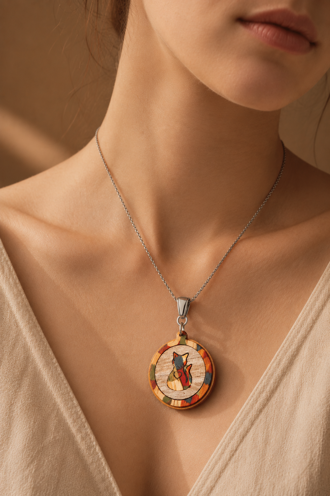
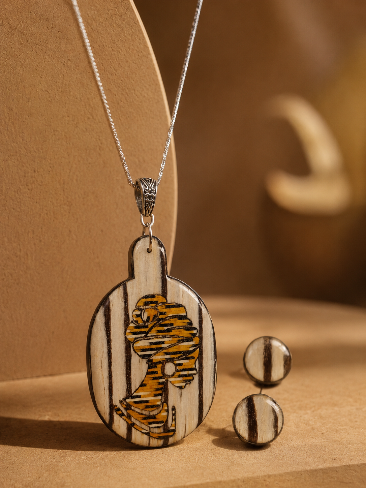
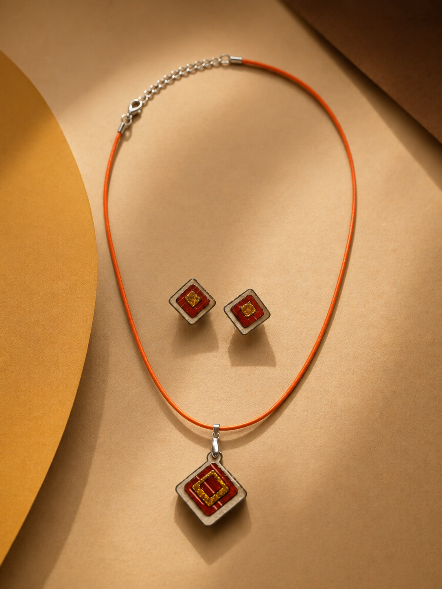
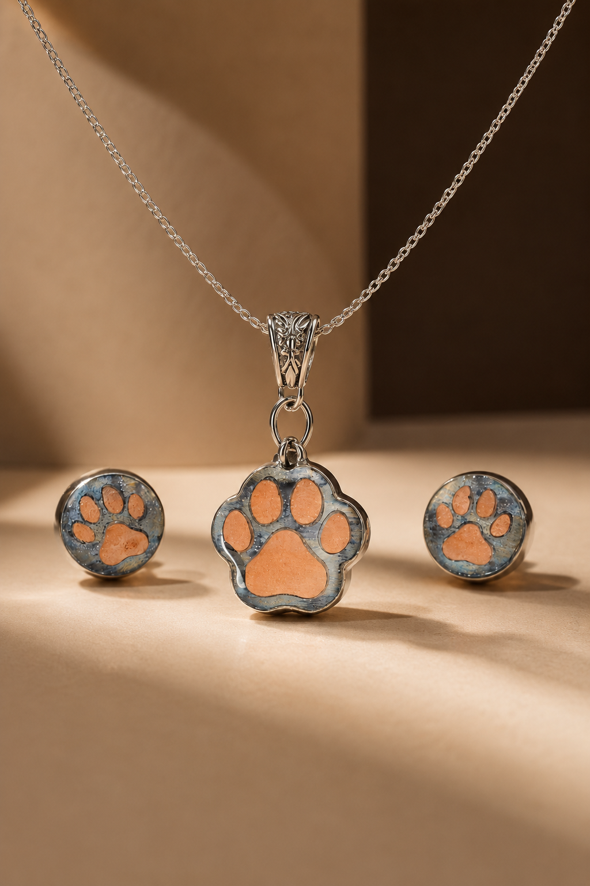
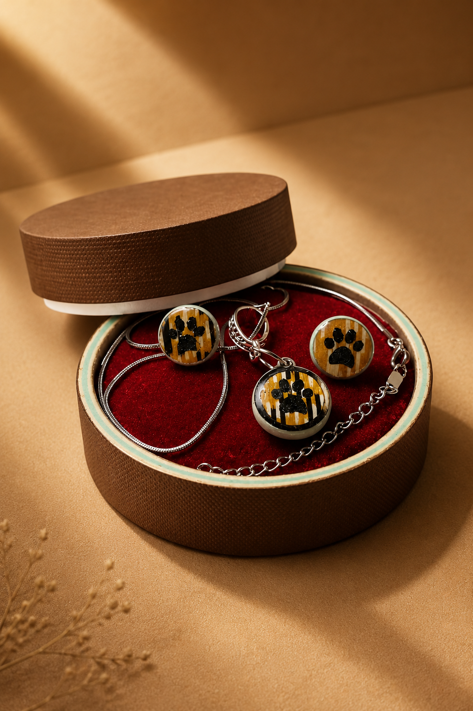

Más que accesorios
ANKANA surge de la idea de que los accesorios tienen la capacidad de acompañar historias personales. Más allá de su función estética, cada pieza puede convertirse en un elemento cotidiano cargado de significado: un regalo que recuerda a alguien importante, un diseño que refleja una etapa de la vida o un detalle que, con el tiempo, termina formando parte de la identidad de quien lo lleva.
Por eso, cada creación nace con la intención de equilibrar diseño, carácter y versatilidad. No buscamos producir piezas efímeras destinadas a seguir una tendencia pasajera, sino objetos que puedan acompañar distintos momentos, estilos y versiones de una misma persona.


Materiales con carácter
Trabajamos principalmente con madera, resina, cuero y metal porque cada material aporta una personalidad propia al diseño y amplía las posibilidades creativas de cada pieza. La madera aporta calidez y autenticidad; la resina permite explorar formas, transparencias y contrastes; el cuero incorpora textura y sofisticación; y el metal aporta estructura y permanencia.
La combinación de estos elementos nos permite crear piezas contemporáneas que conservan una sensación artesanal y humana. No buscamos ocultar la naturaleza de los materiales, sino resaltar aquello que los hace únicos.
Cada material es seleccionado no solo por sus propiedades técnicas, sino también por las posibilidades creativas que ofrece. Esta búsqueda constante nos permite desarrollar piezas que mantienen un equilibrio entre originalidad, funcionalidad y estética.
Nuestro proceso creativo
Cada diseño comienza mucho antes de convertirse en una pieza física. El proceso inicia con la exploración de formas, texturas y combinaciones de materiales que transmitan una sensación específica. Posteriormente se realizan pruebas, ajustes y prototipos hasta encontrar un equilibrio entre estética, comodidad y durabilidad.
Este proceso permite que cada pieza conserve una identidad propia sin perder coherencia con la esencia general de la marca.
Detrás de cada creación existe un trabajo cuidadoso de observación, experimentación y mejora continua. Estamos convencidos de que los detalles marcan la diferencia y que el tiempo dedicado a cada etapa forma parte del valor que finalmente llega a manos de quien elige una pieza ANKANA.


Diseños que cuentan historias
Los accesorios tienen la capacidad de comunicar mucho más de lo que aparentan. A través de formas, símbolos, colores y materiales, cada pieza puede convertirse en una representación de recuerdos, vínculos, intereses o momentos significativos.
Por esta razón, muchas de nuestras creaciones nacen inspiradas en historias reales y en elementos que tienen un significado especial para quienes los llevan. Más que producir accesorios, buscamos crear piezas capaces de generar conexión, identificación y emoción.
Cuando una persona encuentra en un diseño algo que la representa, la pieza deja de ser un simple complemento y se transforma en parte de su propia historia.

Sigamos construyendo historias
En ANKANA entendemos que el diseño cobra verdadero valor cuando logra conectar con las personas. Cada pieza es el resultado de una combinación entre creatividad, materiales cuidadosamente seleccionados y un proceso artesanal que busca preservar la autenticidad de cada detalle.
Más que crear accesorios, buscamos dar forma a objetos que acompañen momentos, expresen identidades y permanezcan en el tiempo como parte de las historias que cada persona construye.
Te invitamos a descubrir nuestras colecciones, seguir nuestro trabajo o ponerte en contacto con nosotros.